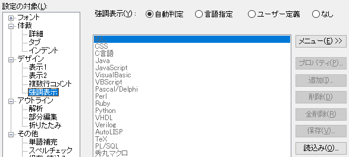
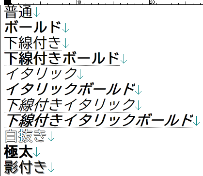
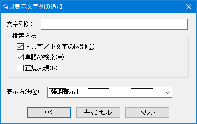

秀丸エディタでは、「強調表示」が可能です。
「強調表示」とは、文書中にある指定された文字列(キーワード)に対し、文字色を指定したり、修飾を行ったりする機能です。 対象が含まれる行全体を強調する「行の強調表示」も可能です。
ユーザーで設定可能な強調表示には、文字列(キーワード)用の強調表示が12種類。
行単位で強調する「行の強調表示」が4種類。
全部で、16種類の強調表示が可能です。
強調表示を設定するには、以下の操作が必要です。
「ファイルタイプ別の設定」→「デザイン」の「場所の一覧」で、 各強調表示の「プロパティ」から、文字色、背景色、スタイルを設定する。
「ファイルタイプ別の設定」→「デザイン」→「強調表示」で、 強調表示する内容を設定する。

「強調表示したい文字列」を、任意の文字色、背景色、スタイルに設定する事は出来ません。
「強調表示したい文字列」を、「場所の一覧」で設定した、どの「強調表示」に割り当てるかを選ぶ 事になります。
強調表示の種類は、全部で16種類あり、優先順位があります。
優先が高い方から
になります。
同じ項目内(例えば、強調表示1〜8)で競合/重複した場合は、どの強調表示が優先されるかは不定とのこと。
「場所の一覧」から各強調表示を選択し、プロパティで
の設定を行います。
「文字色」、「背景色」は任意の色だけではなく、「透明」も設定出来ます。 「透明」に設定した場合、色の変更は行われません。現状の表示色のままです。 (スタイルだけ適応させたい場合は、透明を使う)
「スタイル」は以下のような設定が可能です。

強調表示したい文字列(キーワード)の設定方法は、以下になります。
秀丸エディタが拡張子から言語を判定して、強調表示を行います。 秀丸エディタに内蔵されている強調表示設定を使用するため、強調表示する内容を変更する事は出来ません。
言語を指定して、強調表示を行います。 秀丸エディタに内蔵されている強調表示設定を使用するため、強調表示する内容を変更する事は出来ません。
強調表示する内容をユーザーで設定します。
なし
強調表示を行わない。
秀丸エディタの強調表示定義ファイルライブラリにある「強調表示定義ファイル」や、 webサイトで公開されている「強調表示定義ファイル」の内容を取り込み、「ユーザー定義」にセットします。
「強調表示定義ファイル」の直接指定モード (Ver.8.89以降)
「ユーザー定義」の場合、指定された「強調表示定義ファイル」の内容を直接参照します。
自動判定や言語指定でサポートしている言語は、以下になります。
自動判定の場合は、ファイルの拡張子から自動的に判定されます。 言語指定を行う場合は、リストから言語を選択してください。
自動判定/言語指定 の場合、秀丸エディタに内蔵されている強調表示設定を使用するため、強調表示する内容を変更する事は出来ません。 「デザイン」で、各強調表示の色/スタイルの変更は可能です。
また、各言語の最新バージョンの内容が反映されている保証はありません。
各言語の最新バージョンや、標準でサポートしていない言語の場合、 秀丸エディタの強調表示定義ファイルライブラリ で、その言語用の強調表示定義ファイルが公開されていないか探してみてください。
「ユーザー定義」を選択すると、右側にある各種ボタンが有効になり、強調表示一覧が表示されます。
「追加」ボタンを押すと、「強調表示文字列の追加」ダイアログが表示されます。

通常の検索と同じで、検索条件を設定します。以下の条件を設定可能です。
\n を含めることは出来ません。検索にマッチした箇所に対し、どの強調表示を適用させるか選択します。
完全ではありませんが、ドロップダウンリストに、「デザイン」で設定した色やスタイルで表示されます。
注意 強調表示定義ファイル使用時の注意点を最初に見ておいてください。
「強調表示定義ファイル」の内容を取り込み、「ユーザー定義」にセットします。 (ファイルの内容を取り込み、レジストリにセットするだけなので、この操作以降、強調表示定義ファイルを編集しても反映されません。 レジストリのデータが本体になります)
ダウンロードした「強調表示定義ファイル」を「設定ファイル用のフォルダ」に入れておくと、多少手間が省けます。 (ZIP形式で圧縮されている場合は、解凍して、hilightファイルを「設定ファイル用のフォルダ」に入れてください)
「読込み」ボタンを押すと、「強調表示などの読込ダイアログ」が表示されます。
デフォルトでは、「動作環境」にある「設定ファイル用のフォルダ」で設定されているフォルダ内の「強調表示定義ファイル」が 一覧に表示されます。 他のフォルダにある「強調表示定義ファイル」を読み込む場合は、「参照」ボタンからファイルを選択してください。。
「強調表示定義ファイル」を選ぶと、読み込む対象部分に、ファイルに含まれている項目が、チェックされたり、有効になります。 (強調表示から呼び出したので、強調表示のチェックはデフォルトでON状態になります)
一覧に表示されているファイルを選択し、「OK」ボタンを押すか、ファイル一覧のダブルクリックで、選択した内容が読み込まれます。 「強調表示定義ファイル」を読み込んだ場合は、強調表示の設定は「ユーザー定義」になります。
Ver.8.89以降、「強調表示定義ファイル」から直接設定を読み込むモードが追加されています。
(Ver.8.89β8の段階では、指定された「強調表示定義ファイル」から「強調表示」部分のみ読み込んでいます)
「メニュー」から「hilightファイル直接指定モード」を選択してください。
このモードでは「ユーザー定義」の場合、以下のような動作になります。
「ユーザー定義」は強調表示定義ファイルを指定する画面に切り替わります。使用する強調表示定義ファイルを指定してください。
ファイルを開くときに、指定された「強調表示定義ファイル」から強調表示の設定内容を読み込みます。 (「強調表示定義ファイル」の内容を読み取るが、「ファイルタイプ別の設定」に保存しない)
「強調表示定義ファイル」を直接編集する事で、強調表示定義の設定を変更可能です。 「編集」ボタンで、「強調表示定義ファイル」を秀丸エディタで開く事が出来ます。
「ファイルタイプ別の設定」を「キャンセル」ボタン以外で閉じると、保存した編集内容が反映されます。
直接編集する場合は、「強調表示定義ファイル」のフォーマットを理解する必要があります。 詳細は「マクロヘルプ−設定系−loadhilight文」を参照してください。
「強調表示定義ファイル」を読み込む場合、既に設定してある内容は全て破棄されます。 現状の強調表示に追加されるのではなく、「強調表示定義ファイル」の内容と入れ替わることになります。
元の内容を保存しておきたい場合は、事前に「保存」ボタンを使用し、ファイルに保存しておいてください。
もし、元も強調表示を保存しないで、「強調表示定義ファイル」を読み込んでしまっても、 「ファイルタイプ別の設定」を「キャンセル」や「保存しないで更新」で 閉じてしまえば、変更内容は保存されません。(他の設定も変更していた場合は、それもなしになってしまいますが。)
優先度が低い「強調表示1〜8」の場合、秀丸エディタが行っている、「デザイン」-「場所の一覧」の強調表示以外の条件にマッチしてしまい、 思ったように強調されない場合があります。
これは「場所の一覧」内の優先度の問題なので、対処としては以下になります。
「デザイン」 - 「場所の一覧」の優先順位は、以下の順になります。 (スクロールバーでスクロール出来ます。)

秀丸エディタに内蔵されている強調表示設定を少し変更したい場合の方法です。
新規ファイルを開き、「ファイルタイプ別の設定」-「デザイン」-「強調表示」で、 「言語指定」を選択し、取り出したい言語を選択します。(例は秀丸マクロ)

「保存しないで更新」ボタンを押し、「ファイルタイプ別の設定」を一度閉じます。
再度、「ファイルタイプ別の設定」を開き、「デザイン」-「強調表示」で、「ユーザー定義」を選択します。 そうすると、言語指定で設定されていた内容が、そのまま強調表示一覧に表示されます。
「保存」ボタンで「強調表示定義ファイル」として保存できます。
設定したい拡張子のファイルを開き、「強調表示定義ファイル」を読み込めば、編集が可能です。
秀丸エディタの「強調表示」の機能を使う場合は無理です。「場所の一覧」で設定した強調表示の中から選ぶ必要があります。
カラーマーカーと自動起動マクロを使えば、ある程度、強調表示と同じようなことは可能です。 ただし、結構大変です。
マクロには、「すべての候補を色付け」コマンド相当の「colormarkerallfound文」があります。 この命令と、自動起動マクロの「ファイルを開いた直後」、「編集後タイマー」を使えば、 検索にマッチした箇所を、(カラーマーカーで設定できる範囲ですが)任意の色やスタイルにする事が出来ます。
「編集後タイマー」に、以下のマクロを指定します。(ある程度、時間経過させた方が良いでしょう。)
編集していた行に「ファイルタイプ別の設定」という文字があれば、カラーマーカーで色付けします。 範囲選択しているのは、対象ファイルのサイズが大きいと時間がかかる可能性があるので、その対策です。
実際には、外部にデータファイルを持たせたり、もう少し着色する範囲を広くした方が良いかもしれません。
//検索条件を保持
setcompatiblemode 0x120000;
//各種座標を保存
#x = x; #y = y;
#topy = screentopy;
//画面更新停止
disabledraw;
//1行選択(編集していた行を選択)
selectline;
//「選択した範囲のみ」で動作するように設定。
forceinselect 1;
//検索内容設定
setsearch "ファイルタイプ別の設定", 0;
//検索して色付け
colormarkerallfound 0x0000ff,-1, 3, 2, 0, "";
//念のため範囲選択を解除し、カーソルを動かす
escape;right;
//座標を元に戻し、画面更新
moveto #x, #y;
enabledraw #topy;既存の強調表示内容に、強調表示定義ファイルの内容を追加する方法は、標準では用意されていませんが、 方法がないわけではありません。
強調表示定義ファイルはテキストファイルです。その為、秀丸エディタ自身で編集が可能です。